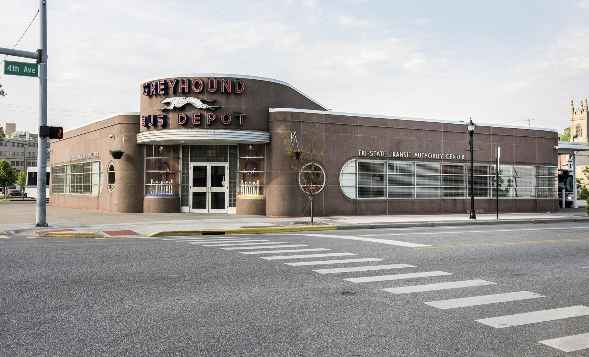

References / Architecture / 201
Greyhound bus station, Huntington, West Virginia
A late Greyhound terminal in the company’s streamline manner: a low granite-clad box with rounded corners, portholes, a ribbed canopy, and red neon capitals.
- Source
- Library of Congress: Streamline Moderne-style Greyhound Bus Station in Huntington, West Virginia
- Creator
- George D. Brown (Clio)
- Made
- 1953 (Clio)
- Style
- Streamline Moderne (agent-proposed, not yet reviewed by a person)
- Moods
- Streamlined, roadside, optimistic
- Evidence
- Downloaded and inspected Carol M. Highsmith’s 2015 photograph (Library of Congress LCCN 2015631799) through its Commons copy at 1920 px. The date and architect come from Clio; SAH Archipedia refused the request (HTTP 403).
- Reviewed
- Rights
- Open license, stored. License: public domain. Rights policy
Built in 1953, after the main period of the style. It shows how long Greyhound kept the streamline look for its terminals.
Context
Clio dates the station to 1953 and names the Charleston architect George D. Brown, who designed many Greyhound stations in the South and Midwest. The Tri-State Transit Authority bought and restored it in 1994. Clio.
The Library of Congress title calls it a Streamline Moderne-style Greyhound bus station. LOC.
Observed
- A low, long building clad in pinkish-brown speckled granite panels, with every outside corner rounded.
- A taller block over the entrance rises in a curve toward the right and carries “GREYHOUND” and “BUS DEPOT” in red neon capitals with the running-dog emblem between.
- Over the doors, a semicircular canopy is ribbed with several parallel horizontal bands.
- A long ribbon window on the right ends in a semicircle, like a racetrack; round porthole windows sit on each side of the building.
- Glass block fills the panels beside the doors; thin white coping runs along the roofline.
Why it belongs
The terminal is a compact catalogue of streamline elements for a roadside brand: rounded ends, parallel bands on the canopy, portholes, and a racetrack window. The red capitals on a warm ground show a transport palette other than cream and navy.
Borrow
Give a long horizontal window or panel semicircular ends.
Ribbed canopies: stack three to five thin parallel bands on a rounded element to suggest speed.
Measured
Machine-extracted by tools/image-traits.py on . Full measurement.
- Mean chroma
- 0.03
- Palette
- #e8e9eb 27%
- #878788 22%
- #767678 8%
- #959595 7%
- #504944 4%
- #d0dbe8 4%
- #60544c 3%
- #423c36 3%

